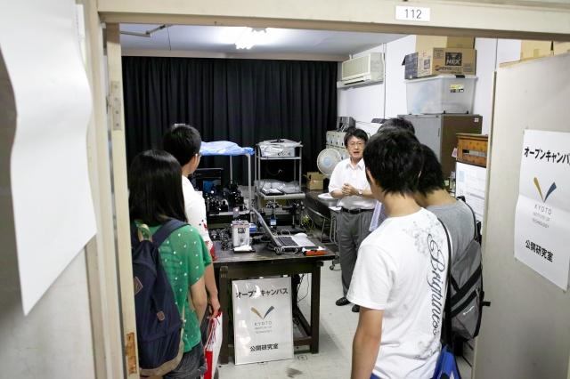

| ・ 平成23年度オープンキャンパス (H23.08.10) | |||
例年、オープンキャンパスの一環で、計測研を公開しています。今年は、午前と午後の2部制。両方とも村田先生の説明です。 京都らしい暑さの中、ありがたいことに今年は去年のほぼ倍の参加。 |
|||
|
センターホール前は大盛況です |
機械システム工学科も大盛況 | ||
|
フォーミュラも頑張ってるね |

村田先生、解説中 | ||
|
10号館の玄関がいっぱいに。。。 |
急遽、ものづくりセンタへ（打上げと切削油のにおいが混ざってる） | ||
|
さっきより増えてます |
機器調整中 | ||